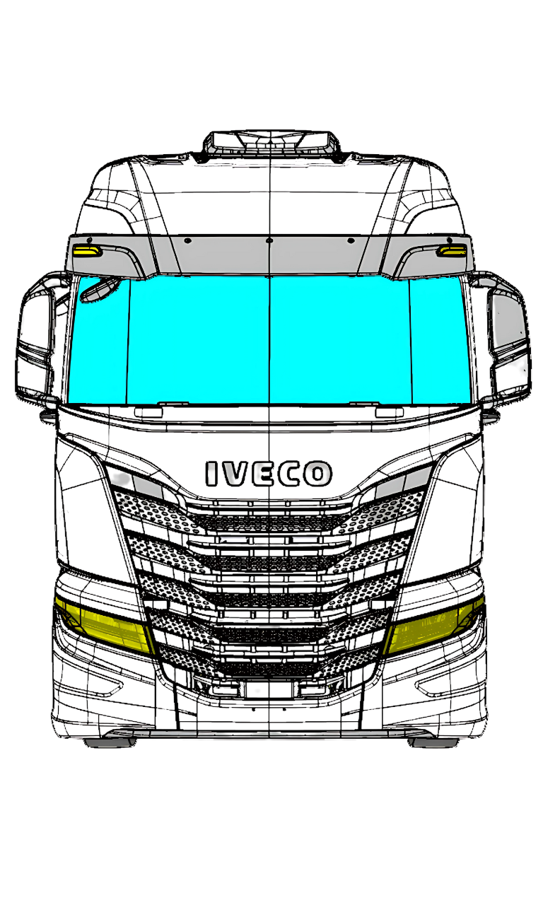

<div class="content">
  <ion-label class="title">Selecione, se houver, pontos de infiltração nos vãos do para-brisa e painel
    frontal.</ion-label>
    <div class="test">
      <div class="image-container">
        
        <ion-button [class.selected]="selected22" class="rounded" style="top: 29%; left: 10%;"
          (click)="select(0)">22</ion-button>
        <ion-button [class.selected]="selected23" class="rounded" style="top: 29%; left: 44%;"
          (click)="select(1)">23</ion-button>
        <ion-button [class.selected]="selected24" class="rounded" style="top: 29%; left: 77%;"
          (click)="select(2)">24</ion-button>
        <ion-button [class.selected]="selected25" class="rounded" style="top: 41%; left: 9%;"
          (click)="select(3)">25</ion-button>
        <ion-button [class.selected]="selected26" class="rounded" style="top: 41%; left: 44%;"
          (click)="select(4)">26</ion-button>
        <ion-button [class.selected]="selected27" class="rounded" style="top: 41%; left: 78%;"
          (click)="select(5)">27</ion-button>
        <ion-button [class.selected]="selected28" class="rounded" style="top: 46%; left: 10%;"
          (click)="select(6)">28</ion-button>
        <ion-button [class.selected]="selected29" class="rounded" style="top: 46%; left: 77%;"
          (click)="select(7)">29</ion-button>
        <ion-button [class.selected]="selected30" class="rounded" style="top: 49%; left: 65%;"
          (click)="select(8)">30</ion-button>
        <ion-button [class.selected]="selected31" class="rounded" style="top: 49%; left: 21%;"
          (click)="select(9)">31</ion-button>
        <ion-button [class.selected]="selected32" class="rounded" style="top: 53%; left: 41%;"
          (click)="select(10)">32</ion-button>
        <ion-button [class.selected]="selected33" class="rounded" style="top: 55%; left: 52%;"
          (click)="select(11)">33</ion-button>
      </div>
    </div>
    <ion-button slot="end" id="finish-upside-test-button" (click)="confirm()">Confirmar</ion-button>
</div>
